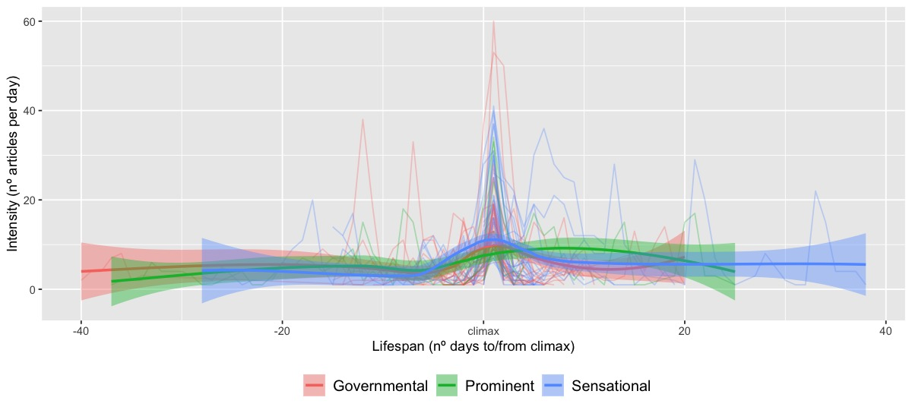

How Issues Guide The Life of News Stories
Blanca Calvo Figueras, Tommaso Caselli, Marcel Broersma
University of Groningen
b.calvo.figueras@student.rug.nl
t.caselli | m.j.broersma@rug.nl
Abstract
Explaining the dynamics between the issues mass media emphasize and the salience audiences attribute to them is the main concern of agenda-setting research. Previous studies (Scheufele and Tewksbury 2006; Yunjuan et al. 2019; Wanta and Ghanem 2006) suggest that the capacity of media to influence the salience of issues depends on four parameters, namely: (1) obtrusiveness; (2) duration; (3) abstractness; and (4) dramatism. Soroka (2002) built upon these parameters by developing an issue typology:
Assuming the validity of Soroka's typology, we ask whether and how issue-types give rise to different life patterns of news stories.
We thus identify three measurable dimensions: (a.) lifespan (i.e., the number of days over which articles of a news story are published); (b.) intensity (i.e., the number of articles per day per story); and (c.) burstiness (i.e., the speed with which stories go from emerging to their climax).
We collected a corpus of 50,385 political articles from major Spanish newspapers in 2018. News stories were generated by aggregating articles with K-means clustering. For each week, we identified the number of clusters (i.e. stories) using the elbow method (k ranging between 1 and 30), and removed general clusters using silhouette analysis.
A subset of the clusters was evaluated against manually labeled data by checking the extent to which clusters contain a single class (i.e., purity), obtaining a score of 0.87. Afterwards, we assigned each story to one issue-type.
The quantitative dimensions show that the issue-types differentiate only to some extent. Sensational stories have the highest intensity, shortest lifespan, and highest burstiness (i.e., they appear “out of the blue”). Prominent stories last for long periods (14 days on average) but have low intensity and burstiness, i.e. they slowly grow to their climax. Governmental stories lay in the middle between these two latter: they are similar to Sensational stories in intensity, and to Prominent stories in lifespan. However, their burstiness score suggests variations in the speed of growth.
Figure 1 visualizes the patterns of the stories aggregated by type[1]: sensational stories have one climax event and long falling actions, while Prominent stories may have multiple climax events. The different typologies seem to instantiate different plot structures (Bal 1997).
The results of our empirical analysis indicate that different issue-types exhibit different behaviors when represented as news stories. To the best of our knowledge, this is the first attempt to operationalize Soroka's framework in a digital approach. Future research will pursue understanding the capacity of media agents to define public agenda through timing.
Our approach is language independent and can be applied to study news issue-types across media platforms and countries[2].
Lifecycle patterns for type of news story
 Figure 1: All the stories of our corpus are plotted with its climax in 0 (transparent lines). The smoothed conditional mean of each type is plotted in bold.
References
Bal, M. 1997. Narratology: Introduction to the Theory of Narrative. University of Toronto Press.
Scheufele, Dietram, and David Tewksbury. 2006. “Framing, Agenda Setting, and Priming: The Evolution of Three Media Effects Models.” Journal of Communication 57 (1): 9–20.
Soroka, Stuart Neil. 2002. Agenda-Setting Dynamics in Canada. UBC Press.
Wanta, Wayne, and Salma Ghanem. 2006. “Effects of Agenda Setting.” In Mass Media Effects Research: Advances Through Meta-Analysis. Routledge.
Yunjuan, Luo, Hansel Burley, Alexander Moe, and Mingxiao Sui. 2019. “A Meta-Analysis of News Media’s Public Agenda-Setting Effects, 1972-2015.” Journalism & Mass Communication Quarterly 96 (1): 150–72.
[1] An interactive application with all the individual stories is available: https://bit.ly/2Pbg438
[2] Our methodology is open source and can be found here: https://bit.ly/2X95fTt